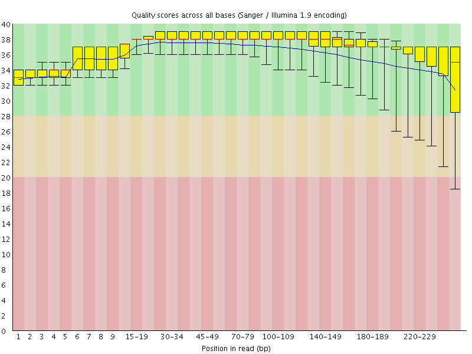
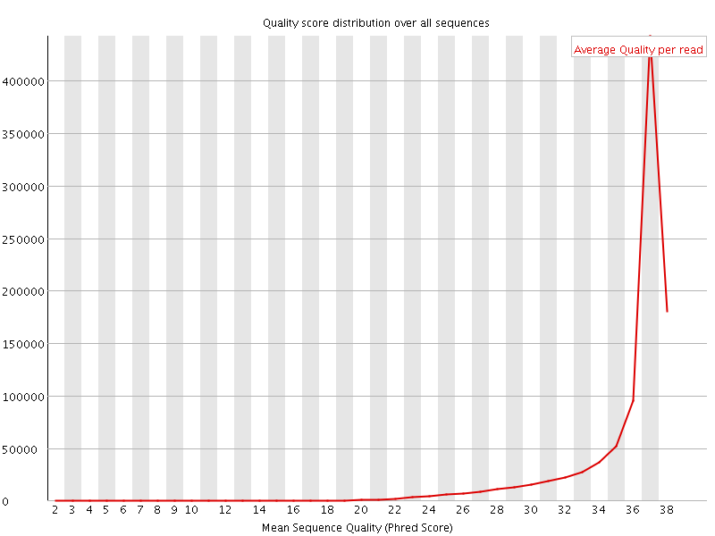
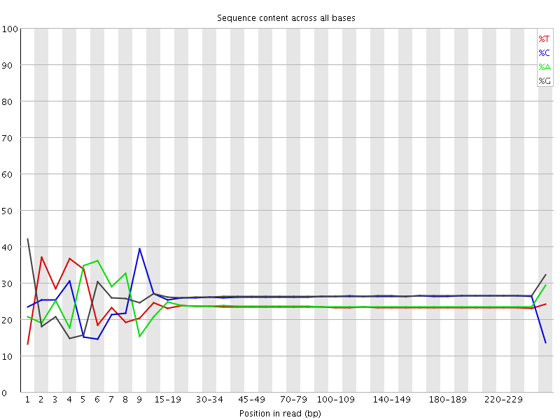
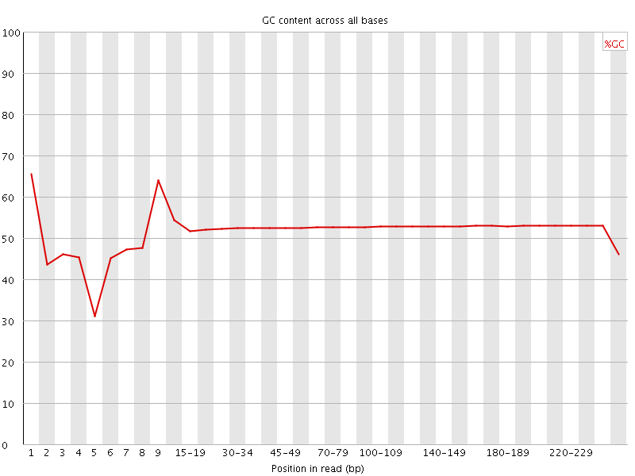
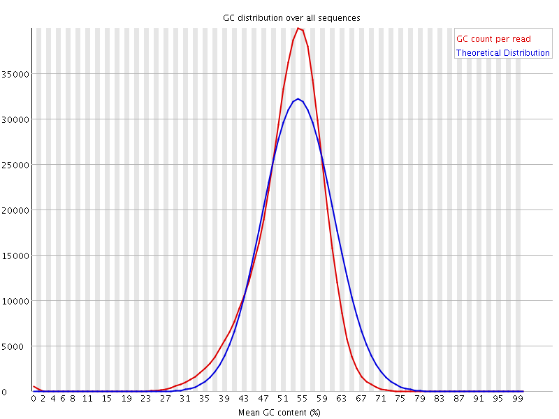
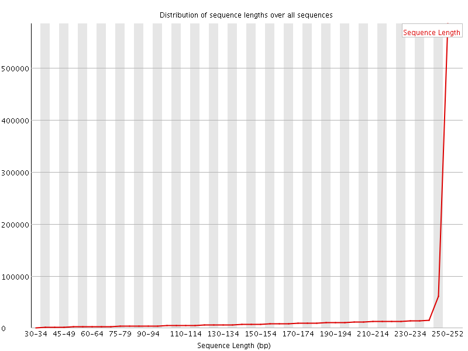
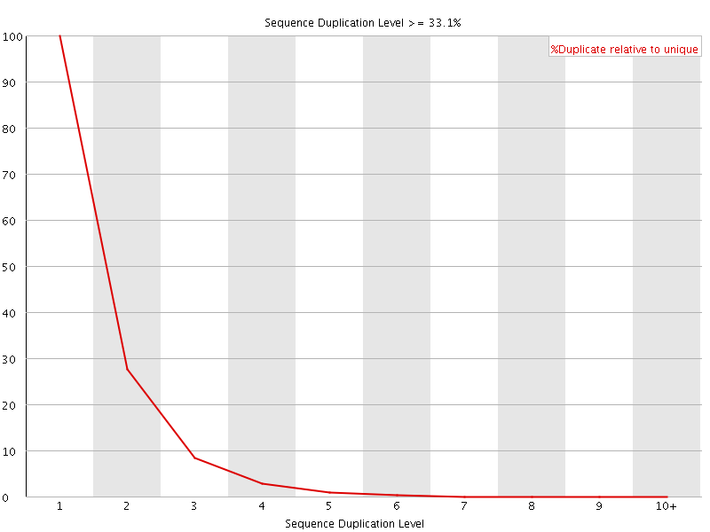
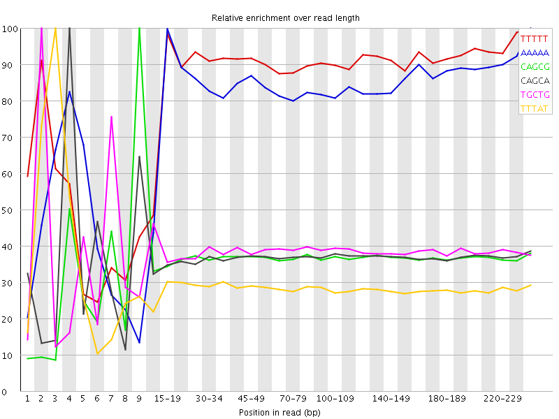

![[OK]](Icons/tick.png) Basic Statistics
Basic Statistics
| Measure | Value |
|---|---|
| Filename | SRR10740743_1.fastq |
| File type | Conventional base calls |
| Encoding | Sanger / Illumina 1.9 |
| Total Sequences | 955320 |
| Filtered Sequences | 0 |
| Sequence length | 35-251 |
| %GC | 52 |
Per base sequence quality

Per sequence quality scores

![[FAIL]](Icons/error.png) Per base sequence content
Per base sequence content

Per base GC content

![[WARN]](Icons/warning.png) Per sequence GC content
Per sequence GC content

Per base N content

Sequence Length Distribution

Sequence Duplication Levels

Overrepresented sequences
No overrepresented sequences
Kmer Content

| Sequence | Count | Obs/Exp Overall | Obs/Exp Max | Max Obs/Exp Position |
|---|---|---|---|---|
| TTTTT | 541295 | 3.5163612 | 3.95559 | 240-247 |
| AAAAA | 549470 | 3.4943595 | 4.2083592 | 240-247 |
| CAGCG | 638925 | 2.645628 | 7.252525 | 9 |
| CAGCA | 488295 | 2.2601855 | 6.127731 | 4 |
| TGCTG | 477190 | 2.2092965 | 5.7249784 | 2 |
| TTTAT | 339245 | 2.1944504 | 7.6985526 | 3 |
| ATAAA | 343475 | 2.1936426 | 9.047734 | 3 |
| GTTTT | 378910 | 2.1926305 | 6.030068 | 1 |
| AAAAC | 377125 | 2.1633136 | 5.109169 | 5 |
| TTTTA | 318845 | 2.0624902 | 7.012331 | 2 |
| TTATC | 354985 | 2.0624607 | 6.041522 | 4 |
| GATAA | 358390 | 2.0475936 | 5.480103 | 2 |
| TAAAA | 318315 | 2.0329554 | 6.274131 | 4 |
| TTATT | 285085 | 1.8441094 | 6.740701 | 4 |
| AATAA | 285215 | 1.8215585 | 7.2127805 | 2 |
| ATATT | 270215 | 1.7405022 | 7.4808154 | 1 |
| TCCAG | 373950 | 1.738291 | 6.8781333 | 2 |
| AATAT | 267340 | 1.7146753 | 5.705516 | 5 |
| CTGGA | 370955 | 1.7101599 | 5.848418 | 4 |
| TTCAG | 324475 | 1.6792943 | 5.398818 | 2 |
| TACCG | 359335 | 1.6703539 | 7.206887 | 7 |
| CTGCG | 394475 | 1.6403841 | 5.734845 | 9 |
| ATTAA | 248405 | 1.5932293 | 7.7467437 | 3 |
| TTAAA | 247270 | 1.5859495 | 5.7693043 | 4 |
| TTTAA | 245395 | 1.5806323 | 5.729835 | 2 |
| TTAAT | 244820 | 1.5769286 | 6.128432 | 3 |
| ATTAT | 243635 | 1.5692958 | 7.281517 | 3 |
| ATAAT | 242935 | 1.5581456 | 6.7970057 | 3 |
| AACAG | 288475 | 1.480333 | 6.1016116 | 7 |
| ACCGC | 352435 | 1.4714698 | 5.67029 | 8 |
| TATTG | 253230 | 1.4591414 | 7.3798366 | 2 |
| CAATA | 250290 | 1.4418657 | 5.8248324 | 4 |
| AACTG | 279640 | 1.4411119 | 5.125332 | 7 |
| CTTTA | 244160 | 1.418568 | 5.9837394 | 2 |
| TAAAG | 245705 | 1.4037892 | 5.9788675 | 4 |
| CATTA | 239245 | 1.3841125 | 6.482575 | 2 |
| GAATA | 240230 | 1.3725088 | 6.553395 | 1 |
| GTTAT | 237995 | 1.3713555 | 5.5141835 | 1 |
| TATTC | 235925 | 1.3707228 | 5.5985203 | 5 |
| TAATG | 235220 | 1.3496131 | 6.1501803 | 4 |
| AATAC | 228905 | 1.3186713 | 7.429049 | 5 |
| GTATT | 228455 | 1.3163849 | 10.079621 | 1 |
| TCCTG | 277980 | 1.2976862 | 5.4733424 | 2 |
| TATCC | 246270 | 1.2851403 | 5.0227118 | 5 |
| ATTAC | 221205 | 1.2797449 | 5.6195097 | 3 |
| ATACC | 246225 | 1.279452 | 7.1776605 | 6 |
| GTTTA | 221905 | 1.278643 | 6.252804 | 1 |
| TAAAC | 219480 | 1.264376 | 5.4110465 | 5 |
| GGATA | 247270 | 1.2637944 | 5.433268 | 1 |
| ACAGC | 272205 | 1.2599632 | 5.3809447 | 8 |
| GTTCA | 232975 | 1.2057434 | 5.398818 | 1 |
| CATAA | 204840 | 1.1800382 | 5.417413 | 2 |
| ACCGT | 252505 | 1.173759 | 5.8045487 | 8 |
| TATTA | 181765 | 1.1707803 | 10.064579 | 2 |
| TAATA | 182250 | 1.1689218 | 7.690043 | 4 |
| TACTG | 215105 | 1.1132587 | 5.6390195 | 7 |
| TTATA | 128625 | 0.8284962 | 5.331238 | 4 |
| TATAA | 128065 | 0.82138807 | 6.7332172 | 2 |
| ATATA | 108730 | 0.69737655 | 5.0747194 | 1 |
| TATAC | 100730 | 0.5827567 | 5.3254285 | 5 |
| GTATA | 98930 | 0.567627 | 6.7969003 | 1 |